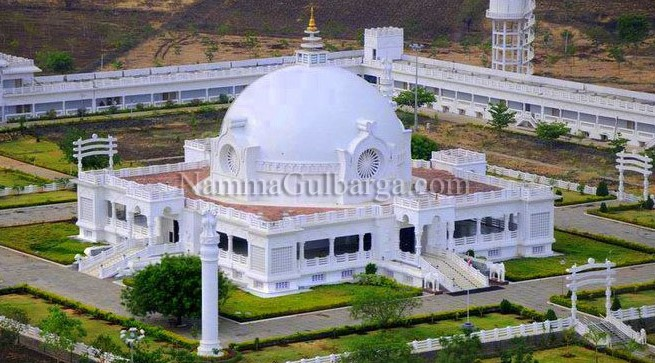

To witness a unique confluence of religious diversity, visit the Khwaja Bande Nawaz Dargah. This is the tomb of the famous Sufi mystic Khwaja Bande Nawaz. Home to a vast library composed of more than ten thousand books of Urdu, Arabic and Persian languages, this mausoleum is one of the most visited sites of Gulbarga. The Persian, Indo-Saracenic and Arabic influences on the building are evident from the dome and towers that surround the tomb. Even today, the Darga stands as a testament to the unity of various religions of the region. People believe that all wishes come true to earnest devotees who step foot in the mausoleum, regardless of religion. The neem tree built on the grave of the saint’s daughter is said to have healing powers too.
To witness a unique confluence of religious diversity, visit the Khwaja Bande Nawaz Dargah. This is the tomb of the famous Sufi mystic Khwaja Bande Nawaz. Home to a vast library composed of more than ten thousand books of Urdu, Arabic and Persian languages, this mausoleum is one of the most visited sites of Gulbarga. The Persian, Indo-Saracenic and Arabic influences on the building are evident from the dome and towers that surround the tomb. Even today, the Darga stands as a testament to the unity of various religions of the region. People believe that all wishes come true to earnest devotees who step foot in the mausoleum, regardless of religion. The neem tree built on the grave of the saint’s daughter is said to have healing powers too.

Nestled amidst arrant tranquillity and serenity, Buddha Vihar is the place to be if you are someone who enjoys peace. Situated within the Gulbarga University, the monument is a significant Buddhist pilgrimage center constructed in the conventional Buddhist styles of India. The Vihar is located in Gulbarga, a city also popularly referred to as Kalaburagi. Formally inaugurated by the spiritual leader of Tibet, Dalai Lama, Buddha Vihar stands as a shrine hailing non-violence and world peace. Keep in mind that the site is closed between 12 noon and 4:00 PM every day